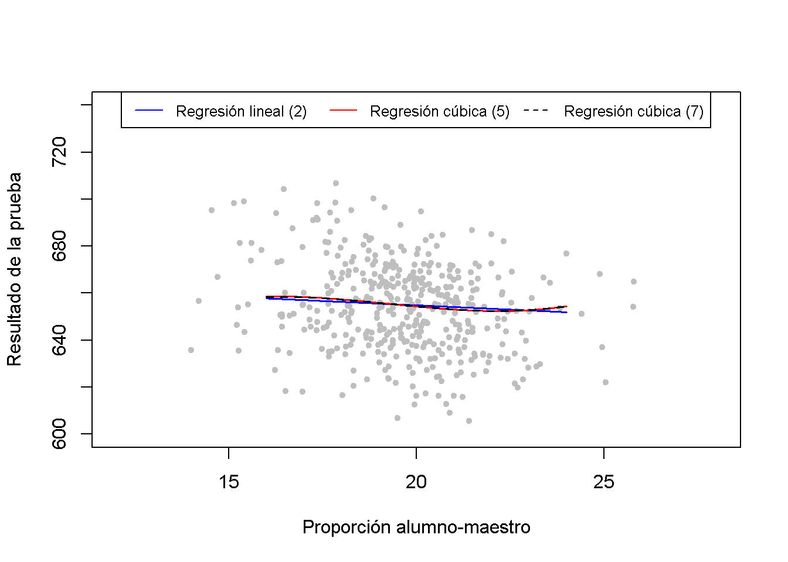
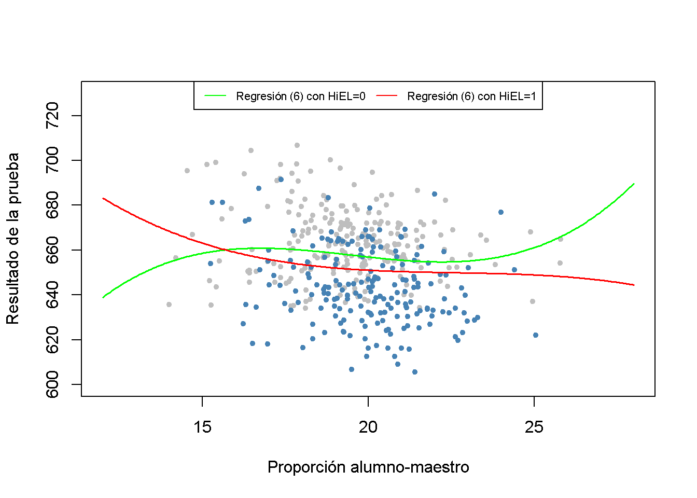

9.4 Efectos no lineales en los puntajes de las pruebas de la proporción alumno-maestro
En esta sección se discutirán tres preguntas específicas sobre la relación entre los puntajes de las pruebas y la proporción alumno-maestro:
¿El efecto en las calificaciones de las pruebas de disminuir la proporción de estudiantes por maestro depende de la fracción de estudiantes de inglés cuando se controlan las idiosincrasias económicas de los diferentes distritos?
¿Depende este efecto de la proporción de alumnos por maestro?
¿Qué tan fuerte es el efecto de disminuir la proporción de estudiantes por maestro (en dos estudiantes por maestro) si se toman en cuenta las características económicas y las no linealidades?
Para responder a estas preguntas, se consideran un total de siete modelos, algunos de los cuales son especificaciones de regresión no lineal de los tipos que se han discutido anteriormente. Como medidas de los antecedentes económicos de los estudiantes, se consideran adicionalmente los regresores \(lunch\) y \(\ln(income)\). Se usa el logaritmo de \(income\) porque el análisis del Capítulo 9.2 mostró que la relación no lineal entre \(income\) y \(TestScores\) es aproximadamente logarítmica. No se incluye el gasto por alumno (\(expenditure\)) porque hacerlo implicaría que el gasto varía con la proporción alumno-maestro.
Modelos de regresión no lineal de puntajes de prueba
Las especificaciones del modelo consideradas son:
\[\begin{align} TestScore_i =& \beta_0 + \beta_1 size_i + \beta_4 english_i + \beta_9 lunch_i + u_i \\ TestScore_i =& \beta_0 + \beta_1 size_i + \beta_4 english_i + \beta_9 lunch_i + \beta_{10} \ln(income_i) + u_i \\ TestScore_i =& \beta_0 + \beta_1 size_i + \beta_5 HiEL_i + \beta_6 (HiEL_i\times size_i) + u_i \\ TestScore_i =& \beta_0 + \beta_1 size_i + \beta_5 HiEL_i + \beta_6 (HiEL_i\times size_i) + \beta_9 lunch_i + \beta_{10} \ln(income_i) + u_i \\ TestScore_i =& \beta_0 + \beta_1 size_i + \beta_2 size_i^2 + \beta_5 HiEL_i + \beta_9 lunch_i + \beta_{10} \ln(income_i) + u_i \\ TestScore_i =& \beta_0 + \beta_1 size_i + \beta_2 size_i^2 + \beta_3 size_i^3 + \beta_5 HiEL_i + \beta_6 (HiEL\times size) \\ &+ \beta_7 (HiEL_i\times size_i^2) + \beta_8 (HiEL_i\times size_i^3) + \beta_9 lunch_i + \beta_{10} \ln(income_i) + u_i \\ TestScore_i =& \beta_0 + \beta_1 size_i + \beta_2 size_i^2 + \beta_3 size_i^3 + \beta_4 english + \beta_9 lunch_i + \beta_{10} \ln(income_i) + u_i \end{align}\]
# estimar todos los modelos
TestScore_mod1 <- lm(score ~ size + english + lunch, data = CASchools)
TestScore_mod2 <- lm(score ~ size + english + lunch + log(income), data = CASchools)
TestScore_mod3 <- lm(score ~ size + HiEL + HiEL:size, data = CASchools)
TestScore_mod4 <- lm(score ~ size + HiEL + HiEL:size + lunch + log(income), data = CASchools)
TestScore_mod5 <- lm(score ~ size + I(size^2) + I(size^3) + HiEL + lunch + log(income),
data = CASchools)
TestScore_mod6 <- lm(score ~ size + I(size^2) + I(size^3) + HiEL + HiEL:size + HiEL:I(size^2) +
HiEL:I(size^3) + lunch + log(income), data = CASchools)
TestScore_mod7 <- lm(score ~ size + I(size^2) + I(size^3) + english + lunch + log(income),
data = CASchools)Se puede usar summary() para evaluar el ajuste de los modelos. Usando stargazer() también se puede obtener una representación tabular de todas las salidas de regresión y que es más conveniente para la comparación de los modelos.
# recopilar errores estándar robustos en una lista
rob_se <- list(sqrt(diag(vcovHC(TestScore_mod1, type = "HC1"))),
sqrt(diag(vcovHC(TestScore_mod2, type = "HC1"))),
sqrt(diag(vcovHC(TestScore_mod3, type = "HC1"))),
sqrt(diag(vcovHC(TestScore_mod4, type = "HC1"))),
sqrt(diag(vcovHC(TestScore_mod5, type = "HC1"))),
sqrt(diag(vcovHC(TestScore_mod6, type = "HC1"))),
sqrt(diag(vcovHC(TestScore_mod7, type = "HC1"))))
# generar una tabla LaTeX de salidas de regresión
stargazer(TestScore_mod1,
TestScore_mod2,
TestScore_mod3,
TestScore_mod4,
TestScore_mod5,
TestScore_mod6,
TestScore_mod7,
digits = 3,
dep.var.caption = "Variable dependiente: Puntaje de la prueba",
se = rob_se,
column.labels = c("(1)", "(2)", "(3)", "(4)", "(5)", "(6)", "(7)"))| Variable dependiente: Puntaje de la prueba | |||||||
| score | |||||||
| (1) | (2) | (3) | (4) | (5) | (6) | (7) | |
| size | -0.998*** | -0.734*** | -0.968 | -0.531 | 64.339*** | 83.702*** | 65.285*** |
| (0.270) | (0.257) | (0.589) | (0.342) | (24.861) | (28.497) | (25.259) | |
| english | -0.122*** | -0.176*** | -0.166*** | ||||
| (0.033) | (0.034) | (0.034) | |||||
| I(size2) | -3.424*** | -4.381*** | -3.466*** | ||||
| (1.250) | (1.441) | (1.271) | |||||
| I(size3) | 0.059*** | 0.075*** | 0.060*** | ||||
| (0.021) | (0.024) | (0.021) | |||||
| lunch | -0.547*** | -0.398*** | -0.411*** | -0.420*** | -0.418*** | -0.402*** | |
| (0.024) | (0.033) | (0.029) | (0.029) | (0.029) | (0.033) | ||
| log(income) | 11.569*** | 12.124*** | 11.748*** | 11.800*** | 11.509*** | ||
| (1.819) | (1.798) | (1.771) | (1.778) | (1.806) | |||
| HiEL | 5.639 | 5.498 | -5.474*** | 816.076** | |||
| (19.515) | (9.795) | (1.034) | (327.674) | ||||
| size:HiEL | -1.277 | -0.578 | -123.282** | ||||
| (0.967) | (0.496) | (50.213) | |||||
| I(size2):HiEL | 6.121** | ||||||
| (2.542) | |||||||
| I(size3):HiEL | -0.101** | ||||||
| (0.043) | |||||||
| Constant | 700.150*** | 658.552*** | 682.246*** | 653.666*** | 252.050 | 122.353 | 244.809 |
| (5.568) | (8.642) | (11.868) | (9.869) | (163.634) | (185.519) | (165.722) | |
| Observations | 420 | 420 | 420 | 420 | 420 | 420 | 420 |
| R2 | 0.775 | 0.796 | 0.310 | 0.797 | 0.801 | 0.803 | 0.801 |
| Adjusted R2 | 0.773 | 0.794 | 0.305 | 0.795 | 0.798 | 0.799 | 0.798 |
| Residual Std. Error | 9.080 (df = 416) | 8.643 (df = 415) | 15.880 (df = 416) | 8.629 (df = 414) | 8.559 (df = 413) | 8.547 (df = 410) | 8.568 (df = 413) |
| F Statistic | 476.306*** (df = 3; 416) | 405.359*** (df = 4; 415) | 62.399*** (df = 3; 416) | 325.803*** (df = 5; 414) | 277.212*** (df = 6; 413) | 185.777*** (df = 9; 410) | 276.515*** (df = 6; 413) |
| Note: | *p<0.1; **p<0.05; ***p<0.01 | ||||||
Table 9.2: Modelos no lineales de puntajes de prueba
Es momento de resumir lo que se puede concluir a partir de los resultados presentados en la Tabla 9.2.
En primer lugar, el coeficiente de \(size\) es estadísticamente significativo en los siete modelos. Sumando \(\ln(income)\) al modelo (1) se encuentra que el coeficiente correspondiente es estadísticamente significativo a \(1\%\) mientras que todos los demás coeficientes permanecen en su nivel de significancia. Además, la estimación del coeficiente de \(size\) es aproximadamente \(0.27\) puntos más grande, lo que puede ser un signo de sesgo atenuado de variable omitida. Considerando que esta es una razón para incluir \(\ln(income)\) como regresor también en otros modelos.
Las regresiones (3) y (4) tienen como objetivo evaluar el efecto de permitir una interacción entre \(size\) y \(HiEL\), sin y con variables de control económico. En ambos modelos, tanto el coeficiente del término de interacción como el coeficiente de la variable ficticia no son estadísticamente significativos. Por lo tanto, incluso con controles económicos no se puede rechazar la hipótesis nula de que el efecto de la proporción de estudiantes por maestro en los puntajes de las pruebas es el mismo para los distritos con una proporción alta y los distritos con una proporción baja de estudiantes que aprenden inglés.
La regresión (5) incluye un término cúbico para la relación alumno-maestro y omite la interacción entre \(size\) y \(HiEl\). Los resultados indican que existe un efecto no lineal de la proporción alumno-maestro en los puntajes de las pruebas (¿Puede verificar esto usando una prueba \(F\) de \(H_0: \beta_2=\beta_3=0\)?)
En consecuencia, la regresión (6) explora más a fondo si la fracción de estudiantes de inglés afecta la proporción de estudiantes por maestro al usar \(HiEL \times size\) y las interacciones \(HiEL \times size^2\) y \(HiEL \times size^3\). Todas las pruebas de \(t\) individuales indican que existen efectos significativos. Se puede verificar esto usando una prueba \(F\) robusta de \(H_0: \beta_6=\beta_7=\beta_8=0\).
# comprobar la importancia conjunta de los términos de interacción
linearHypothesis(TestScore_mod6,
c("size:HiEL=0", "I(size^2):HiEL=0", "I(size^3):HiEL=0"),
vcov. = vcovHC, type = "HC1")
#> Linear hypothesis test
#>
#> Hypothesis:
#> size:HiEL = 0
#> I(size^2):HiEL = 0
#> I(size^3):HiEL = 0
#>
#> Model 1: restricted model
#> Model 2: score ~ size + I(size^2) + I(size^3) + HiEL + HiEL:size + HiEL:I(size^2) +
#> HiEL:I(size^3) + lunch + log(income)
#>
#> Note: Coefficient covariance matrix supplied.
#>
#> Res.Df Df F Pr(>F)
#> 1 413
#> 2 410 3 2.1885 0.08882 .
#> ---
#> Signif. codes: 0 '***' 0.001 '**' 0.01 '*' 0.05 '.' 0.1 ' ' 1Se puede encontrar que el valor nulo se puede rechazar al nivel de \(5\%\) y se concluye que la función de regresión difiere para los distritos con un porcentaje alto y bajo de estudiantes de inglés.
La especificación (7) usa una medida continua para la proporción de estudiantes de inglés en lugar de una variable ficticia (y por lo tanto no incluye términos de interacción). Se pueden observar solo pequeños cambios en las estimaciones de coeficientes en los otros regresores y, por lo tanto, se concluye que los resultados observados para la especificación (5) no son sensibles a la forma en que se mide el porcentaje de estudiantes de inglés.
Se continua produciendo una gráfica para la interpretación de las especificaciones no lineales (2), (5) y (7).
# gráfico de dispersión
plot(CASchools$size,
CASchools$score,
xlim = c(12, 28),
ylim = c(600, 740),
pch = 20,
col = "gray",
xlab = "Proporción alumno-maestro",
ylab = "Resultado de la prueba")
# agregar una leyenda
legend("top",
legend = c("Regresión lineal (2)",
"Regresión cúbica (5)",
"Regresión cúbica (7)"),
cex = 0.8,
ncol = 3,
lty = c(1, 1, 2),
col = c("blue", "red", "black"))
# datos para usar con predict()
new_data <- data.frame("size" = seq(16, 24, 0.05),
"english" = mean(CASchools$english),
"lunch" = mean(CASchools$lunch),
"income" = mean(CASchools$income),
"HiEL" = mean(CASchools$HiEL))
# agregar función de regresión estimada para el modelo (2)
fitted <- predict(TestScore_mod2, newdata = new_data)
lines(new_data$size,
fitted,
lwd = 1.5,
col = "blue")
# agregar función de regresión estimada para el modelo (5)
fitted <- predict(TestScore_mod5, newdata = new_data)
lines(new_data$size,
fitted,
lwd = 1.5,
col = "red")
# agregar función de regresión estimada para el modelo (7)
fitted <- predict(TestScore_mod7, newdata = new_data)
lines(new_data$size,
fitted,
col = "black",
lwd = 1.5,
lty = 2)
Para la figura anterior, todos los regresores excepto \(size\) se establecen en sus promedios muestrales. Se puede ver que las regresiones cúbicas (5) y (7) son casi idénticas. Indican que la relación entre los puntajes de las pruebas y la proporción alumno-maestro solo tiene una pequeña cantidad de no linealidad ya que no se desvían mucho de la función de regresión de (2).
El siguiente fragmento de código reproduce otra gráfica. Se usa plot() y points() para colorear las observaciones dependiendo de \(HiEL\). Una vez más, las líneas de regresión se dibujan en función de las predicciones que utilizan promedios muestrales promedio de todos los regresores, excepto \(size\).
# graficar un diagrama de dispersión
# observaciones con HiEL = 0
plot(CASchools$size[CASchools$HiEL == 0],
CASchools$score[CASchools$HiEL == 0],
xlim = c(12, 28),
ylim = c(600, 730),
pch = 20,
col = "gray",
xlab = "Proporción alumno-maestro",
ylab = "Resultado de la prueba")
# observaciones con HiEL = 1
points(CASchools$size[CASchools$HiEL == 1],
CASchools$score[CASchools$HiEL == 1],
col = "steelblue",
pch = 20)
# agrega una leyenda
legend("top",
legend = c("Regresión (6) con HiEL=0", "Regresión (6) con HiEL=1"),
cex = 0.7,
ncol = 2,
lty = c(1, 1),
col = c("green", "red"))
# datos para usar con 'predict()'
new_data <- data.frame("size" = seq(12, 28, 0.05),
"english" = mean(CASchools$english),
"lunch" = mean(CASchools$lunch),
"income" = mean(CASchools$income),
"HiEL" = 0)
# agregar la función de regresión estimada para el modelo (6) con HiEL = 0
fitted <- predict(TestScore_mod6, newdata = new_data)
lines(new_data$size,
fitted,
lwd = 1.5,
col = "green")
# agregar la función de regresión estimada para el modelo (6) con HiEL = 1
new_data$HiEL <- 1
fitted <- predict(TestScore_mod6, newdata = new_data)
lines(new_data$size,
fitted,
lwd = 1.5,
col = "red")
El resultado de la regresión muestra que el modelo (6) encuentra coeficientes estadísticamente significativos en los términos de interacción \(HiEL:size\), \(HiEL:size^2\) y \(HiEL:size^3\); es decir, existe evidencia de que la prueba de conexión de la relación no lineal de los puntajes y la proporción de estudiantes por maestro depende de la fracción de estudiantes que aprenden inglés en el distrito. Sin embargo, la figura anterior muestra que esta diferencia no es de importancia práctica y es un buen ejemplo de por qué se debe tener cuidado al interpretar modelos no lineales: Aunque las dos funciones de regresión se ven diferentes, se puede ver que la pendiente de ambas funciones es casi idéntica para la proporción alumno-maestro entre \(17\) y \(23\). Dado que este rango incluye casi el \(90\%\) de todas las observaciones, se puede estar seguro de que se pueden descuidar las interacciones no lineales entre la fracción de estudiantes de inglés y la proporción de estudiantes por maestro.
Uno podría tener la tentación de objetar ya que ambas funciones muestran pendientes opuestas para proporciones alumno-maestro por debajo de \(15\) y más allá de \(24\). Existen al menos posibles objeciones:
Existen pocas observaciones con valores bajos y altos de la relación alumno-maestro, por lo que hay poca información para explotar al estimar el modelo. Esto significa que la función estimada es menos precisa en las colas del conjunto de datos.
El comportamiento descrito anteriormente de la función de regresión es una advertencia típica cuando se usan funciones cúbicas, ya que generalmente muestran un comportamiento extremo para valores de regresores extremos. Piense en la gráfica de \(f(x) = x^3\).
Por lo tanto, no se encuentra evidencia clara de una relación entre el tamaño de la clase y los puntajes de las pruebas en el porcentaje de estudiantes de inglés en el distrito.
Resumen
Ahora se pueden responder a las tres preguntas planteadas al comienzo de esta sección.
En los modelos lineales, el porcentaje de estudiantes de inglés tiene poca influencia en el efecto en los puntajes de las pruebas al cambiar la proporción de estudiantes por maestro. Este resultado sigue siendo válido si se controlan los antecedentes económicos de los estudiantes. Si bien la especificación cúbica (6) proporciona evidencia de que el efecto de la proporción alumno-maestro en la puntuación de la prueba depende de la proporción de estudiantes de inglés, la fuerza de este efecto es insignificante.
Al controlar por los antecedentes económicos de los estudiantes, se encuentra evidencia de no linealidades en la relación entre la proporción de estudiantes por maestro y los puntajes de las pruebas.
La especificación lineal (2) predice que una reducción de la proporción de estudiantes por maestro en dos estudiantes por maestro conduce a una mejora en los puntajes de las pruebas de aproximadamente \(-0.73 \times (-2) = 1.46\) puntos. Dado que el modelo es lineal, este efecto es independiente del tamaño de la clase. Suponga que la proporción de estudiantes por maestro es de \(20\). Por ejemplo, el modelo no lineal (5) predice que la reducción aumenta los puntajes de las pruebas en \[64.33\cdot18+18^2\cdot(-3.42)+18^3\cdot(0.059) - (64.33\cdot20+20^2\cdot(-3.42)+20^3\cdot(0.059)) \approx 3.3\] puntos. Si la proporción es de \(22\), una reducción a \(20\) conduce a una mejora prevista en las puntuaciones de las pruebas de \[64.33\cdot20+20^2\cdot(-3.42)+20^3\cdot(0.059) - (64.33\cdot22+22^2\cdot(-3.42)+22^3\cdot(0.059)) \approx 2.4\] puntos. Esto sugiere que el efecto es más fuerte en clases más pequeñas.